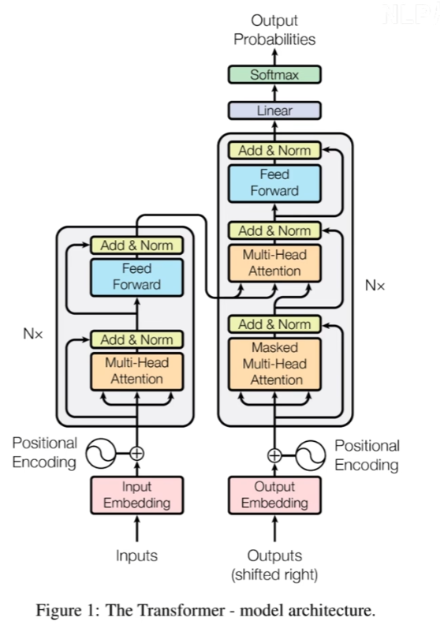
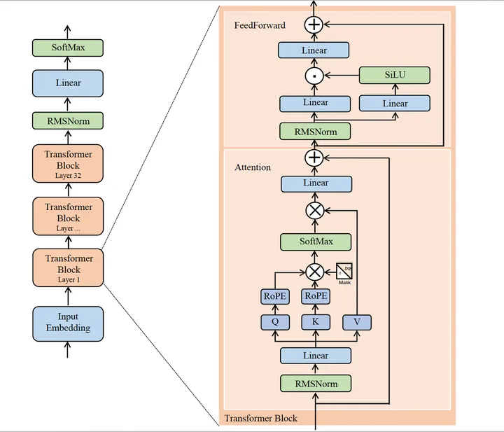
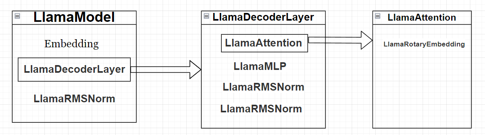

最近有个合作idea，需要魔改llama3代码，所以来学习下transformers和llama3
先验知识
一. 预处理
分词
- Text -> tokenizer -> input_ids
- Text是文本，tokenizer是分词器，将text转成一个个token，然后通过词汇表将token映射到整数id上，得到input_ids
embedding
- 将整数id映射为一个向量的。目的是为了丰富其蕴含的信息，意思相近的token的向量在距离上也会彼此接近
位置编码
为什么需要位置编码？
因为“猫在椅子上”和“椅子在猫上”意思完全不同。位置编码就是告诉模型每个token在句子中的位置，这样模型就可以理解单词的顺序。
假设有“I love machine learning.“，将其切为token后且embedding后，得到的向量如下：
I -> [0.1, 0.2, 0.3, 0.4]
love -> [0.5, 0.6, 0.7,. 0.8]
...
最简单的位置编码方式就是token在句子中出现的位置下标为1，其余分量为0的向量。即 I 的位置向量为[1, 0, 0, 0]，love的位置向量为[0, 1, 0, 0]
然后将embedding vector与position vector相加，得到的向量就不仅有词义信息，还蕴含了位置信息。
二. 编码器层(Encoder Layer)
编码器是由多个编码器层堆叠而成。编码器用于处理输入序列，生成上下文敏感的表示。
自注意力机制
- 自注意机制让每个单词能够关注句子中的其他单词，从而理解上下文
- 具体来说，首先会有三个权重矩阵：\(W_Q\)（查询权重）、\(W_K\)（键权重）、\(W_V\)（值权重）
- 然后对于每个进来的vector x，都会分别与这三个矩阵相乘，每个vector x可得到\(x_Q\)（查询向量）、\(x_K\)（键向量）、\(x_V\)（值向量）三个向量。
- 查询向量\(x_Q\)：可以理解为每个词在关注其他词提出的问题
- 键向量\(x_K\)：可以理解为每个词的特征表示，用来与查询向量匹配。例如你自己有个键向量，然后另一个人有个查询向量。发现你们的这俩向量向量比较接近，说明他查到了你，那么你的值向量就会返回给他
- 值向量\(x_V\)：可以理解为token实际的内容信息
- 下面举个实际的例子：
- 对于句子“I love NLP“，对于I，可以计算出查询、键、值向量。对于love、NLP同理。
- 那么对于I，计算它的查询向量与其余token的键向量的点积，将这些点积用softmax归一化，得到的一组权重就是I与其它token之间的联系权重（联系越大，权重越大，所有权重之和为1）。然后分别用对应的权重乘上对应token的值向量，然后求和，得到的向量叫做
I 的注意力输出。（即 I 在关注了句子中其余token后，得出的一个向量）
- softmax：将一组向量转换为一个概率分布向量，全部分量之和为
- 对于\(x_i\)，其softmax后的值为\(\frac{e^{x_i}}{\sum_{j=1}^n e^{x_j}}\)
- softmax的特性是放大差异，较大的输入值对应的输出概率更高，较小的输入值对应的输出概率更小
多头注意力机制
上面讲了注意力机制，其中提到了三个权重矩阵，这三个权重矩阵我们叫做“注意力头”
那么前面说的是，对于一个vector x，通过一个注意力头，可以得到一个注意力输出
那为了让一个token能捕捉到更多信息，我们可以对于一个vector x使用多个注意力头（也就是多个不同的权重矩阵），得到多个注意力输出，这就是多头注意力机制
前面说到，注意力输出是一个向量，表示该token关注句子中其余token后得出的信息。那么多头注意力机制会得到多个注意力输出
将多个注意力输出简单拼接在一起，然后通过一个Linear变换再把数据映射回原始token的shape
层归一化 & 残差连接
层归一化有助于消除梯度消失和梯度爆炸问题，使得梯度能够更稳定地传播到前面的层。这种稳定性加快了模型的收敛速度，使得模型能够更快地达到较优的性能。
具体操作就是对输入向量进行标准化，使其具有零均值和单位方差，有助于加快训练速度并稳定模型性能（就是对一个向量进行归一化，就这么简单）
残差连接就更简单了，将归一化后的向量与输入进来的向量做加法，得到的向量就是输出。
- 为什么要使用残差连接？
- 在深层神经网络中，随着层数的增加，梯度消失和梯度爆炸的问题变得越来越严重。残差连接为梯度提供了直接路径，使得梯度可以更顺畅地反向传播，缓解了这些问题。
- 残差连接确保输入信息在深层网络中不会丢失，保持了输入的原始特征。这有助于模型在学习新的特征时，不会遗忘前面层已经学习到的重要信息。
- 关于梯度消失
- 梯度消失的主要原因是激活函数的选择和链式法则的计算。常见的激活函数（如Sigmoid和Tanh）在其取值范围的两端会趋近于零，这会导致其导数也趋近于零。当使用这些激活函数时，梯度在反向传播过程中会不断地乘以这些小于1的数值，从而逐渐衰减为接近零的值。
- 梯度爆炸问题是指在训练深层神经网络时，梯度在反向传播过程中逐渐变大，最终变得非常大。这会导致前面层的权重更新幅度过大，从而使得网络无法稳定训练，甚至导致数值溢出。
- 为什么要使用残差连接？
前馈神经网络层（FNN, feedforward neural network）
FNN层提供了一个非线性转换（激活函数），使模型能够学习输入数据中的复杂模式和关系。通常，FNN由两层全连接网络和一个非线性激活函数（通常是ReLU）组成。这种结构使得模型不仅能够捕捉线性关系，还能够处理非线性关系。
具体操作就是对于刚才经过层归一化和残差连接后的多头注意输出向量，先做一次线性变换，然后ReLu一下，再做一次线性变化，得到FFN的输出向量
层归一化 & 残差连接
- 跟上面一样，对经过FNN后的向量做层归一化和残差连接即可。
三. 解码器层（Decoder Layer）
解码器是由多个解码器层堆叠而成。解码器利用编码器的表示和自身的机制生成目标序列。
掩码注意力机制
首先跟编码器一样，需要将句子经过tokenizer和embedding，添加位置编码
然后对于每个token的输入向量x，先是计算其查询向量、键向量、值向量，然后对于每个x，计算它的查询向量与其余token的键向量的点积，再将这些点积形成的向量乘上一个掩码矩阵，再将结果进行softmax归一化，得到注意力权重向量
- 掩码矩阵：掩码矩阵中的值为 0 或 \(-\infty\)。在计算注意力得分时，任何被掩盖的（未来的）词都会被设置为 \(-\infty\)，从而在 Softmax 计算时被转化为 0 的权重，确保未来的词对当前词的生成没有影响。
再将注意力权重向量乘上值向量，得到最终的注意力输出
多头掩码注意力机制
- 跟上面的原理一样，就是有多个不同的查询、键、值矩阵，所以对于一个token的向量x，会得到多个注意力输出。只需要将这些注意力输出向量直接拼起来，然后做一次线性变化，即得到了最终的输出向量。
层归一化 & 残差连接
编码器-解码器注意力机制
- 本质就是多头注意力机制，对于每个token的注意力输出，将其乘上\(W_Q\)，得到查询向量\(x_Q\)，然后用encoder的输出向量乘上\(W_K、W_V\)，得到\(x_K、x_V\)。然后计算注意力权重，最后得到注意力输出即可。
层归一化 & 残差连接
前馈神经网络层
层归一化 & 残差连接
四. transformer
在了解了上面的encoder和decoder后，就可以用一张图来概括Transformer的工作流程了：

图里只有Linear和Softmax没有讲到了。Linear就是将高维向量映射到词汇表的维度，然后进行Softmax后就得到了每个单词出现的概率。
图片来源：链接
五. llama 2

上图是llama 2的模型架构。
有一些不同的地方：
- embedding后没有加上position bedding，而是把位置编码的工作放在了注意力层
- 每个transformer block中的注意力层和feedforward层一进去都进行了一个RMSNorm，而不是像transformer一样，在每层的最后加LayerNorm
- 在对token bedding后的向量x分别乘三个矩阵得到Q、K、V三个向量后，没有直接去计算注意力权重，而是对Q和K向量进行了一次位置编码
- feedward层跟transformer有蛮大的不同，首先先进入来一次RMSNorm，然后如上图，两个线性变换并行，其中一个结果经过SiLU后与另一个线性变换的结果对矩阵点乘（对应元素相乘）。然后再做一次线性变化得到结果，结果做一次残差连接，得到最终输出结果
transformers库入门学习
首先去huggingface上下模型，建议用ssh下载（我反正https下不来一直说我网络问题），然后选择“只下载除了lfs文件”的下载方式，将项目clone到本地（先ssh-agent bash，再ssh-add 私钥路径，再用hf的ssh代码）。然后再单独手动下载几个lfs大文件，流量多的话直接在官网下即可，少的话就去魔塔下。下完之后把它们丢到项目里。
新建一个虚拟环境，然后下载好transformers、pytorch（pytorch的下载最好用官网源和官网下载指令，不然会出很多莫名奇妙的错误）
然后即可在本地运行模型啦，使用huggingface的官方示例代码看看是否能运行成功。
一. Pipeline
- 是transformers里的一个库，用来让你傻瓜实现各种推理任务。你只需要输入文本，它会帮你数据预处理、模型调用、处理输出结果。
- pipeline支持的推理任务类型：
| 名称 | 解释 | 任务类型 |
|---|---|---|
| text-classification(sentiment-analysis) | 分析句子情感取向 | text |
| token-classification(ner) | 识别句子中主体分类 | text |
| text-generation | 文本生成 | text |
| ... | ... | ... |
模型加载方式：
- pipe = pipeline("text-classification")：使用默认模型
- pipe = pipeline("text-classification", model="模型path")：使用自定义模型
- pipe = pipeline("text-classification", model="模型path", tokenizer="分词器path")：使用自定义模型和分词器
- pipe = pipeline("text-classification", model="模型path", device_map="auto")：使用多卡gpu进行推理
查看推理使用的硬件资源：
- print(pipe.model.device)
查看不同推理任务pipeline的文档：
- 首先from transformers import *，然后定义了一个pipeline对象后（比如叫pipe），直接display一下pipe，然后找到其对应的对象名字的最后一截（例如text-classification就是TextClassificationPipeline），然后display一下TextClassificationPipeline，ctrl加单击它去到对应的文档
二. tokenizer
- transformers里的tokenizer比先验知识里学到的tokenizer内容更丰富些。包含分词、构建词典、数据转换、数据填充与截断。
- 导入包：from transformers import AutoTokenizer
- 加载分词器：tokenizer = AutoTokenizer.from_pretrainded("模型路径")
- 保存分词器：tokenizer.save_pretrained("保存路径")
- 查看词表：tokenizer.vocab
- 分词：tokens = tokenizer.tokenize(句子)
- 索引转换：
- ids = tokenizer.convert_tokens_to_ids(tokens)
- 其实.convert_...有很多转换方式，总之tokens、ids之间可以互转，tokens可以转回string
- 简单的实现方式：
- ids = tokenizer.encode(句子, [add_special_tokens=True])
- str = tokenizer.decode(ids, [skip_special_tokens=False])
- 不同模型在encode/decode句子的时候，会在句子前后加特殊字符，若不想要可以使用add/skip_special_tokens参数
- 更简单的实现方式：
- inputs = tokenizer(句子, return_tensors="pt")：以pytorch形式返回tokenizer结果
三. model
- 模型分类
- 编码器类型：自编码模型，使用Encoder，双向注意力机制
- 解码器类型：自回归模型，使用Decoder，单向注意力机制
- 编码器解码器模型：sequence to sequence模型，使用Encoder + Decoder
- model head
- 定义：连接在模型后的层，通常由一个或多个全连接层组成。model head将模型的编码的表示结果进行映射，以解决不同类型的任务
- transformers中的任务头
- model：返回模型本身的编码结果，等价于无任务头
- ForCausalLM：纯的解码器类型任务头
- ... ...
- 无任务头模型加载：model = AutoModel.from_pretrained("模型路径", device_map="auto")
- 无任务头模型使用：
- output = model(inputs)
- inputs是一个字典，包括input_ids和attention_mask俩键，inputs相当于传俩参进去，第一个参是input_ids的值，第二个参是attention_mask的值
- 有任务头模型加载：
- output = AutoModelForSequenceClassification.from_pretained("模型路径", device_map="auto")
- 记得from transformers import AutoModelForSequenceClassification
- 其中一种使用模板：
1 | from transformers import AutoModelForCausalLM, AutoTokenizer |
llama-factory
一. 概念介绍
在介绍llama-factory之前，我想先对大模型中的几个概念做一下阐述：
训练：训练是指从头开始构建一个模型，并通过大量的数据让模型学习。这一阶段包括以下几个步骤
- 数据收集和准备：收集大量相关的训练数据，并进行预处理，以确保数据质量和格式一致性
- 模型初始化：定义模型的架构并初始化参数，通常参数初始化为随机值
- 前向传播：将输入数据通过模型，计算出预测值
- 损失计算：计算预测值与真实值之间的差异，即损失函数
- 后向传播：通过损失函数的梯度，反向调整模型参数以最小化损失
- 优化：使用优化算法（如梯度下降、Adam等）更新模型参数
- 迭代：重复前向传播、损失计算和后向传播，直到模型在训练数据上达到满意的性能或达到预定的训练轮次
微调：微调是指在一个已经训练好的大模型基础上，使用特定领域的数据进行进一步的训练，以便模型在特定任务或领域上表现更好。这一阶段包括以下几个步骤
- 预训练模型选择：选择一个已经训练好的大模型作为基础模型，这个模型已经具备了丰富的知识和特征。
- 特定领域数据准备：收集和准备与目标任务相关的特定领域数据。
- 模型调整：根据特定任务的需求，对模型架构进行适当的调整（如增加或修改一些层）。
- 训练数据微调：使用特定领域的数据对模型进行训练，但通常学习率较低，训练时间较短。这样可以在保持原模型知识的同时，学习新的特定领域知识。
- 评估和验证：在特定任务的数据集上评估微调后的模型性能，并进行验证。
推理：是指在深度学习和机器学习模型中，使用已经训练好的模型来对新数据进行预测或决策的过程。前面“transformers库入门学习”中调包都是用来做推理任务的。
现在我们来介绍一下llama-factory：
- 定义：LLaMA-Factory 是一个开源的工具，旨在简化大语言模型（LLMs）如 LLaMA、BLOOM、Mistral、Baichuan 和 Qwen 的微调和训练过程。它提供了用户友好的界面和一整套工具，使得即使是对机器学习了解不多的人也可以轻松进行各种微调和训练任务。
- 特点：
- 支持多种大语言模型，并集成了高效的微调技术，适用于各种应用场景
- 平台支持全参数调优、部分参数调优，以及诸如 LoRA（低秩适配）、QLoRA（量化低秩适配）和奖励建模等技术。这些方法有助于在尽量少的计算资源下优化模型
- LLaMA-Factory 提供了一些工具，用于以标准化格式准备数据，便于训练数据的处理和分词。这确保了不同数据集和模型之间的兼容性和效率
- 该框架包括基于 Gradio 的 Web UI，用于交互式测试和演示，允许用户实时输入提示并生成模型的输出。这个界面使得微调后的模型可以更容易地进行展示和验证
二. 基本功能学习
- 将llama-factory部署到本地（参考github官方教程即可，就三行话）
- 准备数据集，在LLaMA-Factory -> data下面把自己的数据集粘贴进去（用json格式），然后在dataset_info.json中添加新数据集的记录
- 启动可视化微调：llamafactory-cli webui
- 在webui中配置好微调设置后就可以开始微调了（微调结束后UI界面的loss图会显示出来）
- 然后在Chat里加载检查点，跟其对话，检验微调成果
- 如果觉得可以了，就在Export里把检查点和原模型合并，导出为新模型
- 如果想量化，也是在Export里量化导出即可（量化时不能有检查点）
三. 微调数据集制作
制作微调数据集的方式和数据集的格式有很多。这里我先只讲一种，因为目前只用到这一种。
就是生成Q&A式的json格式的数据用来微调模型。
微调的json文件的格式在llama-factory/data/下可以找到，配合gpt很容易写出符合格式的json文件。所以重难点是准备好Q&A数据即可。
有几种方案，我这里记录一下：
- 直接找Q&A数据集
- 直接让chatbox生成Q&A
- 让chatbot生成Q，然后再让chatbox根据这些Q，生成A
这里可以多写一点，例如模型的选择，对应模型的特点，一些对话技巧。等项目做完再详细补充。TODO
训练方法(SFT)
一. 概念介绍
虽然本项目暂时只讨论SFT，但是除了它，还有几种常用的训练方法，这里介绍一下：
- SFT(Supervised Fine-Tuning)
- 监督微调，是指在已有预训练模型的基础上，使用带有标签的数据集进行进一步训练。其目标是让模型在特定任务上表现得更好。具体步骤如下：
- 数据准备：收集并标注与任务相关的数据集。
- 模型微调：将预训练模型与新的数据集一起进行训练。模型会根据给定的输入和标签对，调整其参数以最小化预测错误。
- 评估与验证：使用验证集评估模型性能，确保模型在训练集之外也能表现良好。
- 监督微调，是指在已有预训练模型的基础上，使用带有标签的数据集进行进一步训练。其目标是让模型在特定任务上表现得更好。具体步骤如下：
- PPO(Proximal Policy Optimization)
- 近端策略优化，是一种用于强化学习的算法，旨在优化策略以最大化累积奖励。PPO通过限制每次策略更新的步长来稳定训练过程，避免策略剧烈变化。其基本流程如下：
- 策略评估：使用当前策略与环境进行交互，收集状态、动作和奖励数据。
- 计算优势函数：评估当前策略相对于其他策略的优势，通常使用时序差分方法。
- 策略更新：使用PPO的目标函数更新策略参数，同时限制每次更新的步长，以保持训练的稳定性。
- 迭代：重复上述步骤，直到策略收敛或达到预定的训练轮次。
- 近端策略优化，是一种用于强化学习的算法，旨在优化策略以最大化累积奖励。PPO通过限制每次策略更新的步长来稳定训练过程，避免策略剧烈变化。其基本流程如下：
- DPO(Direct Policy Optimization)
- 直接策略优化，是一种优化策略的强化学习方法，通过直接优化策略函数来提高决策效果。与PPO不同，DPO直接对策略参数进行调整。其具体步骤如下：
- 策略初始化：初始化策略参数，通常使用预训练模型的参数。
- 数据收集：使用当前策略与环境进行交互，收集状态、动作和奖励数据。
- 梯度计算：计算策略函数相对于策略参数的梯度。
- 参数更新：使用梯度信息更新策略参数，直接优化策略函数。
- 迭代：重复上述步骤，直到策略收敛或达到预定的训练轮次。
- 直接策略优化，是一种优化策略的强化学习方法，通过直接优化策略函数来提高决策效果。与PPO不同，DPO直接对策略参数进行调整。其具体步骤如下：
- 一些个人理解：
- SFT很好理解，就是给问题给答案，训练就不断使参数结果拟合答案就行了。
- DPD是强化学习的训练方法，首先核心就是先要得到“优化策略函数”，也就是评估当前参数组合的优劣程度的（在文本任务里具体怎么得到的暂且忽略）。DPO的策略就是用梯度下降最优化优化策略函数从而改变参数。
- PPO也是强化学习的训练方法，但是跟DPD不一样，它没有求优化策略函数，而是求了一个“优势函数”，即新参数组合相较于旧参数组合的优劣程度，其目标就是去优化这个优势函数，从而去改变参数。
二. SFT源码阅读
这里SFT的源码是来自于llama-factory
SFT包的目录是首先一个名为SFT的文件夹，然后底下四个文件：__init__.py、workflow.py、trainer.py、metric.py。init这个py是用来表示该文件是一个包，然后在里面定义了公共接口（即SFT这个包可以调的api）。
主要看workflow.py即可知道SFT的流程，另外俩py文件是一些模块api的实现。只学习流程的话主要看workflow.py就行了（相当于是C++中的main函数）
workflow.py中的工作流程大致如下：
- 首先先加载：tokenizer、data、model、data_collator（数据处理控制器）、metric_module（指标）。
- 前三个就不说了，必备的食材
- data_collator是用来确定到时候数据预处理的逻辑方式标准的（例如什么padding方式这种）
- metric_module是用来确定到时候训练/评价/预测时的指标的（例如用什么指标工具）
- 加载trainer，然后开始训练
- 如果要评估，那就评估一下。如果要预测，那就预测一下
- 首先先加载：tokenizer、data、model、data_collator（数据处理控制器）、metric_module（指标）。
下面的代码我已经写好注释，看一遍大概就知道SFT的流程了。
1 | from typing import TYPE_CHECKING, List, Optional |
llama3源码阅读
日期：2024/7/26，代码来源：huggingface的transformers库中的llama源码
我觉得既然看代码了，若出现逻辑与图冲突，但以代码为准。图只是给你一个大概的先验知识。
一. 整体把握
对于打开modeling_llama.py的大纲，先只关注类，把握整个代码的框架：
最核心的就是LlamaModel，它是基本模型，然后在它的基础上加点RMSNorm或者别的小魔改就可以形成下游任务模型：LlamaForCausalLM、LlamaForSequenceClassification、LlamaForQuestionAnswering、LlamaForTokenClassification。
- LlamaForCausalLM：生成文本。它基于前文内容预测下一个词
- LlamaForSequenceClassification：文本序列进行分类。常用于情感分析、主题分类等任务
- LlamaForQuestionAnswering：从文本中回答问题，通常是根据给定的上下文段落回答特定的问题
- LlamaForTokenClassification：对输入文本中的每个词进行分类。常用于命名实体识别（NER）、部分语法标注（POS）等任务
ok，所以核心类就是LlamaModel，它又由以下这几个部分构成：
- Embedding层（不是一个类）
- LlamaDecoderLayer 若干
- LlamaRMSNorm
可以发现，这其实就是一个最普通的模型，先embedding，然后经过隐藏层，最后RMSNorm一下得到输出。所以关键就是LlamaDecoderLayer，可以把它简单的理解为transformer block，那么它又是由以下东西构成的：
- LlamaAttention（里面会用到LlamaRotaryEmbedding旋转编码）
- LlamaMLP
- LlamaRMSNorm
- LlamaRMSNorm
对于一个transformer block，Attention层和RMSNorm层很容易理解。唯独不太清楚的就是MLP（多层感知机）。我猜估计就是对Attention后的结果做点线性/非线性变换，来点正则啥的东西处理一下的一层。
ok结束，大概的框架理清楚了。用图来展示的话就是：
